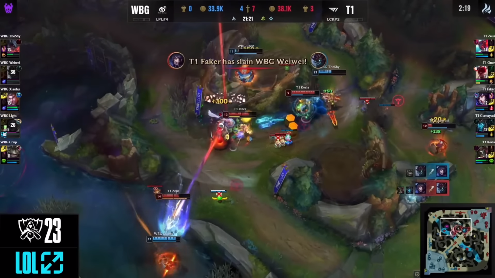

Trân đấu đầu tiên với những chiến thuật Ban Pick rất đẳng cấp và căng thẳng đến từ 2 đội
Những lượt ban pick với những power pick đến từ hai team, Aatrox được trận bên đội xanh đến từ weibo sau đó là những hot pick nhưng Zeus.
T1 pick những con bài mạnh ở đầu và giữa game với ý định dập tắt hy vọng của WBG nhanh và gọn nhất.
Đầu game 2 bên có những pha giao tranh nhỏ lẻ rất căng thẳng và lợi thế đầu tiên tạm thời nghiêng về WBG
Sau đó nhờ vào gumayusi đi lẻ WBG đã có ý định bắt lẻ nhưng ngay sau đó T1 đã có 1 pha phản công và quét sạch team địch dành cho mình lợi thế của ván đấu thứ nhất.

Những pha combat sau đó là sự huỷ diệt T1 dành cho WBG và ván đấu kết thúc ở phút thứ 31.
Xem ván đấu thứ hai tại đây